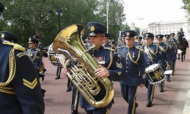

Bandas e Fanfarras
Não espere o futuro mudar tua vida, porque o futuro é a consequência do presente — Racionais MC's,
Bandas e fanfarras são grupos musicais constituídos por instrumentos de sopro e percussão, onde cada elemento é responsável por tocar um instrumento musical onde, no conjunto, forma um sentido musical como um todo.
Fanfarras geralmente são grupos constituídos por instrumentos de percussão, como caixa, prato, bumbo e liras e instrumentos de sopro simples, como corneta e cornetão. Por sua vez, as bandas são constituídas por percussão e instrumentos de sopro completos, como trompete, trombone e souzafone.
As bandas são divididas em Bandas Marciais, que constituem-se de instrumentos de metais e percussão e Bandas Musicais, que além dos metais e percussão, também incluem-se os instrumentos de madeira, como saxofone e clarinete.